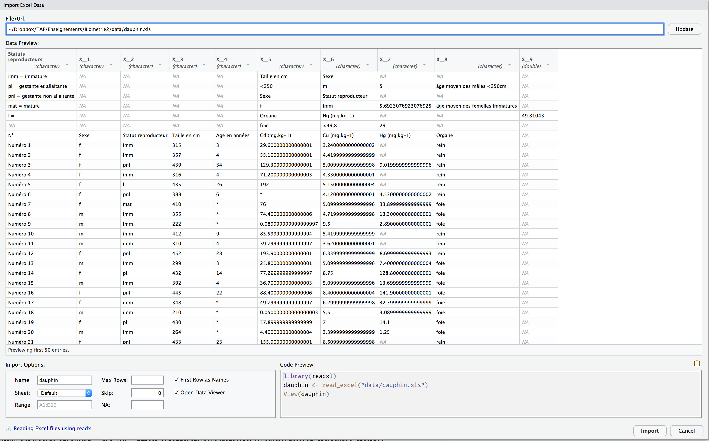
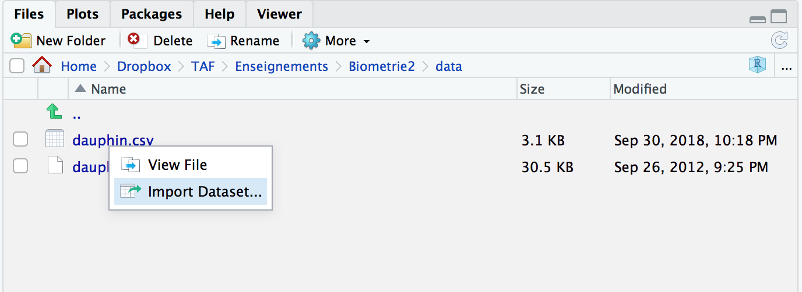

library(dplyr)
library(ggplot2)
library(palmerpenguins)
library(readxl)4.1 Pré-requis
Nous abordons ici une étape essentielle de toute analyse de données : la manipulation de tableaux, la sélection de lignes, de colonnes, la création de nouvelles variables, etc. Bien souvent, les données brutes que nous importons dans R ne sont pas utiles en l’état. Il nous faut parfois sélectionner seulement certaines lignes pour travailler sur une petite partie du jeu de données. Il nous faut parfois modifier des variables existantes (pour modifier les unités par exemple) ou en créer de nouvelles à partir des variables existantes. Nous avons aussi très souvent besoin de constituer des groupes et d’obtenir des statistiques descriptives pour chaque groupe (moyenne, écart-type, erreur type, etc). Nous verrons dans ce chapitre comment faire tout cela grâce au package dplyr qui fournit un cadre cohérent et des fonctions simples permettant d’effectuer tous les tripatouillages de données dont nous pourrons avoir besoin.
Dans ce chapitre, nous aurons besoin des packages suivants :
4.2 Importer des données depuis un tableur
4.2.1 Les règles de base
Jusqu’à maintenant, nous avons travaillé exclusivement avec des jeux de données déjà disponibles dans R. La plupart du temps, les données sur lesquelles vous devrez travailler devront au préalable être importées dans R, à partir de fichiers issus de tableurs. De tels fichiers se présentent généralement sous l’un des 2 formats suivants :
- Fichiers au format “.csv” : il s’agit d’un format de fichier dit “texte brut”, c’est à dire qu’il peut être ouvert avec n’importe quel éditeur de texte, y compris le bloc notes de Windows. L’extension “.csv” est l’abréviation de “Comma Separated Values”, autrement dit, dans ce type de fichiers, les colonnes sont séparées par des virgules. Cela peut poser problème en France puisque le symbole des décimales est souvent aussi la virgule (et non le point comme dans les pays anglo-saxons). Le séparateur de colonnes utilisé en France dans les fichiers
.csvest alors souvent le point-virgule. Il est possible de créer des fichiers.csvà partir de n’importe quel tableur en choisissantFichier > Exporter...ouFichier > Enregistrer sous...puis en sélectionnant le format approprié (les dénominations sont variables selon les logiciels : format texte brut, format csv, plain text, etc…). - Fichiers au format tableur :
.xlsou.xlsxpour Excel,.calcpour Open Office.
Dans les 2 cas, pour que R puisse importer les données contenues dans ces fichiers, un certain nombre de règles doivent être respectées :
- La première chose à laquelle il faut veiller est la présentation des données. Les variables doivent être en colonnes et les observations en lignes.
- Les cases vides qui correspondent à des données manquantes doivent contenir les lettres
NAen majuscule. Il est important de bien faire la distinction entre les vrais zéros (i.e. les grandeurs mesurées pour lesquelles un zéro a été obtenu), et les valeurs manquantes, c’est à dire pour lesquelles aucune valeur n’a pu être obtenue (e.g. variable non mesurée pour un individu donné ou à une station donnée). - Il est généralement conseillé d’utiliser la première ligne du tableau pour stocker le nom des variables
- Ne jamais utiliser de caractères spéciaux tels que #, $, %, ^, &, *, (, ), {, }, [, ], des accents, des cédilles des guillemets ou des apostrophes… Cela pourrait causer des erreurs lors de l’importation dans
R. Si votre fichier en contient, faites une recherche (via le menuEdition > Rechercher et remplacer...) pour remplacer chaque instance par un caractère qui ne posera pas de problème. - Évitez les espaces dans vos noms de variables, d’observations ou de catégories et remplacez-les par des points ou des
_. - Des noms courts pour les variables sont généralement plus faciles à manipuler par la suite.
- La première valeur de votre tableau devrait toujours se trouver dans la cellule A1 du tableur. Autrement dit, il ne devrait jamais y avoir de lignes incomplètes ou de lignes de commentaires au-dessus des données, ou de colonne vide à gauche de votre tableau. D’ailleurs, il ne devrait jamais y avoir de commentaires à droite ou en dessous de vos données non plus.
4.2.2 Fichiers au format tableur (.xls ou .xlsx)
À titre d’exemple, téléchargez le fichier dauphin.xls et placez-le dans votre répertoire de travail. Ce jeu de données contient des résultats de dosages de différents métaux lourds (cadmium, cuivre et mercure) dans différents organes (foie et rein) de plusieurs dauphins communs Delphinus delphis. Les informations de taille, d’âge et de statut reproducteur sont également précisées. Ouvrez ce fichier dans un tableur. Vous constaterez que son format ne permet pas de l’importer tel quel dans R :
- Il contient des lignes vides inutiles au-dessus des données.
- Il contient des commentaires inutiles au-dessus des données.
- Les titres de colonnes sont complexes et contiennent des caractères spéciaux.
- Dans le tableau, les données manquantes sont représentées soit par des “
*”, soit par des cellules vides.
Importer un tel jeu de données dans R par les méthodes classiques (c’est-à-dire sans utiliser RStudio et uniquement grâce aux fonctions de base de R) demanderait donc un gros travail de mise en forme préalable. Heureusement, RStudio et le package readxl facilitent grandement le processus.
Dans RStudio, localisez l’onglet Files situé dans le panneau en bas à droite de l’interface du logiciel. Dans ce panneau, cliquez sur le nom du fichier Dauphin.xls, puis, dans le menu qui s’affiche, choisissez Import Dataset... :
Import Dataset... dans la fenêtre Files de RStudioLa nouvelle fenêtre qui s’ouvre est celle de l’“assistant d’importation” :

Cette fenêtre contient plusieurs zones importantes :
File/URL(en haut) : lien vers le fichier contenant les données, sur votre ordinateur ou en ligne.Data Preview: zone principale affichant les 50 premières lignes du fichier que l’on souhaite importer.Import Options(en bas à gauche) : zone dans laquelle des options permettant d’importer les données correctement peuvent être spécifiées.Code Preview(en bas à droite) : les lignes de codes que vous pourrez copier-coller dans votre script une fois les réglages corrects effectués.
Ici, nous constatons que les données ne sont pas au bon format. La première chose que nous pouvons faire est d’indiquer à R que nous souhaitons ignorer les 9 premières lignes du fichier. Ensuite, nous précisons à RStudio que l’étoile “*” a été utilisée pour indiquer des données manquantes :
Notez qu’à chaque fois que vous modifiez une valeur dans la zone Import Options, 2 choses se produisent simultanément :
- La zone
Data Previewest mise à jour. Cela permet de s’assurer que les changements effectués ont bien les effets escomptés. - La zone
Code Previewest mise à jour. Cela permet de copier-coller dans votre script les commandes permettant d’importer correctement les données. Ici, voilà le code que nous devons ajouter à notre script :
dauphin <- read_excel("data/dauphin.xls", na = "*", skip = 9)La commande library(readxl) est inutile puisque nous l’avons déjà saisie au début de ce chapitre. Nous disposons maintenant d’un nouvel objet nommé dauphin. Il est stocké sous la forme d’un tibble :
dauphin# A tibble: 93 × 9
`N°` Sexe `Statut reproducteur` `Taille en cm` `Age en années`
<chr> <chr> <chr> <dbl> <dbl>
1 Numéro 1 f imm 315 3
2 Numéro 2 f imm 357 4
3 Numéro 3 f pnl 439 34
4 Numéro 4 f imm 316 4
5 Numéro 5 f l 435 26
6 Numéro 6 f pnl 388 6
7 Numéro 7 f mat 410 NA
8 Numéro 8 m imm 355 NA
9 Numéro 9 m imm 222 NA
10 Numéro 10 m imm 412 9
# ℹ 83 more rows
# ℹ 4 more variables: `Cd (mg.kg-1)` <dbl>, `Cu (mg.kg-1)` <dbl>,
# `Hg (mg.kg-1)` <dbl>, Organe <chr>Notez toutefois que les noms de colonnes complexes sont toujours présents. Avec de tels noms, les variables ne seront pas faciles à manipuler et les risques d’erreurs de frappes seront nombreux. Nous avons tout intérêt à les modifier à l’aide de la fonction names() :
names(dauphin) <- c("ID", "Sexe", "Statut", "Taille",
"Age", "Cd", "Cu", "Hg", "Organe")
dauphin# A tibble: 93 × 9
ID Sexe Statut Taille Age Cd Cu Hg Organe
<chr> <chr> <chr> <dbl> <dbl> <dbl> <dbl> <dbl> <chr>
1 Numéro 1 f imm 315 3 29.6 3.24 NA rein
2 Numéro 2 f imm 357 4 55.1 4.42 NA rein
3 Numéro 3 f pnl 439 34 129. 5.01 9.02 rein
4 Numéro 4 f imm 316 4 71.2 4.33 NA rein
5 Numéro 5 f l 435 26 192 5.15 NA rein
6 Numéro 6 f pnl 388 6 NA 4.12 4.53 rein
7 Numéro 7 f mat 410 NA 76 5.1 33.9 foie
8 Numéro 8 m imm 355 NA 74.4 4.72 13.3 foie
9 Numéro 9 m imm 222 NA 0.09 9.5 2.89 foie
10 Numéro 10 m imm 412 9 85.6 5.42 NA rein
# ℹ 83 more rowsEnfin, vous pouvez également noter que certaines variables devraient être modifiées :
- Les variables
Sexe,Statut(qui contient l’information de statut reproducteur des dauphins) etOrgane(qui indique dans quel organe les métaux ont été dosés) sont de type<chr>. L’idéal serait de disposer de facteurs puisqu’ils s’agit de variables catégorielles. - La variable
IDest totalement inutile puisqu’elle est parfaitement redondante avec le numéro de ligne. Nous pourrions donc la supprimer. - Certaines catégories (ou niveaux) de la variable
Statutdevraient être ordonnées puisqu’elles reflètent une progression logique :imm(immature),mat(mature),pnl(pregnant non lactating),pl(pregnant lactating),l(lactating),repos(repos somatique).
Nous verrons dans les sections suivantes comment effectuer simplement ces différentes opérations.
4.2.3 Fichiers au format texte brut (.csv)
Nous allons utiliser les mêmes données que précédemment, mais cette fois-ci, elles sont contenues dans un fichier au format .csv. Téléchargez le fichier dauphin.csv (pour cela, faites un clic droit sur le lien et choisissez Enregistrez la cible du lien sous... ou Télécharger le fichier lié sous..., ou toute autre mention équivalente), placez-le dans votre répertoire de travail, et ouvrez-le avec le bloc notes Windows ou tout autre éditeur de texte brut disponible sur votre ordinateur. Attention : Microsoft Word n’est pas un éditeur de texte brut. Un fichier au format .doc ou .docx est illisible dans un éditeur de texte brut car outre le texte, ces formats de documents contiennent toutes les informations concernant la mise en forme du texte (polices de caractères, tailles, couleurs et autres attributs, présence de figures, de tableaux dans le document, etc.). Attention aussi à ne pas ouvrir vos fichiers .csv avec un tableur tel qu’Excel : la plupart du temps, Excel modifie sans le dire le format de ces fichiers (changement des symboles pour les décimales, ajout de caractères spéciaux et ou invisibles mal reconnus par R, etc.), ce qui cause toutes sortes de problèmes. Tenez vous-en bien à un éditeur de texte brut pour examiner le contenu des fichiers de ce type.
Les fichiers au format .txt, .csv et même .R (vos scripts !) sont des fichiers au format texte brut. Vous pouvez d’ailleurs essayer d’ouvrir dauphin.csv depuis RStudio, en allant dans l’onglet Files (quart inférieur droit de l’interface de RStudio) puis en cliquant sur le nom du fichier et en choisissant View File. RStudio ouvre un nouvel onglet à côté de votre script vous permettant d’inspecter le contenu de ce fichier. Par rapport au fichier Excel, vous pouvez noter un certain nombre de différences :
- Les colonnes sont séparées par des tabulations.
- Les nombres décimaux utilisent la virgule (et non le point comme dans les pays anglo-saxons).
- Les noms de colonnes ont déjà été corrigés/simplifiés par rapport au tableau d’origine.
- Les valeurs manquantes sont toutes codées par des
NAs.
Un travail d’édition du fichier .xls de départ a donc été réalisé en amont de l’enregistrement au format .csv.
Attention, à ce stade, vous avez ouvert un fichier au format texte brut dans RStudio, mais les données contenues dans ce fichier n’ont pas été importées pour autant. Pour les importer, on procède comme pour les fichiers au format tableur (voir section précédente).
On commence par cliquer sur dauphin.csv dans l’onglet Files de RStudio. On sélectionne ensuite Import Dataset... :

.csv depuis l’onglet Files de RStudioLa fenêtre qui s’ouvre est en tous points identique à celle obtenue pour l’importation de fichiers tableurs :

.csv depuis l’onglet Files de RStudioNous voyons ici que par défaut, RStudio considère qu’une unique colonne est présente. En effet, les fichiers .csv utilisent généralement la virgule pour séparer les colonnes. Ce n’est pas le cas ici. Il nous faut donc sélectionner, dans le champ Delimiter, l’option Tab (tabulation) et non Comma (virgule).
À ce stade, chaque variable est maintenant reconnue comme telle, chaque variable occupe donc une colonne distincte. Mais les colonnes Cd, Cu et Hg ne contiennent pas les bonnes valeurs (vous pouvez le vérifier en consultant l’onglet dauphin.csv que vous avez ouvert un peu plus tôt à côté de votre script). La cause est simple : R s’attend à ce que les nombres décimaux utilisent le point en guise de symbole des décimales. Or, notre fichier .csv utilise la virgule. C’est une convention qui dépend du pays dans lequel vous vous trouvez, et de la langue de votre système d’exploitation (en langage technique, on parle de Locale). Le fichier dauphin.csv ayant été créé sur un ordinateur français, la virgule a été utilisée en guise de symbole des décimales. Pour l’indiquer au logiciel, cliquez sur Locale > Configure..., changez le . en , dans le champ Decimal Mark et validez en cliquant sur Configure.

Les données sont maintenant au bon format, prêtes à être importées dans RStudio. Afin de ne pas écraser l’objet dauphin que nous avons créé à partir du fichier tableur un peu plus tôt, nous stockerons ces nouvelles données dans un objet nommé dauphin2. Pour cela, ajoutez un 2 au nom dauphin dans le champ Name en bas à gauche :

Nous n’avons plus qu’à copier-coller dans notre script le code généré automatiquement en bas à droite de la fenêtre (comme précédemment, la ligne library(readr) est inutile : nous avons déjà chargé ce package en début de chapitre).
dauphin2 <- read_delim("data/dauphin.csv",
"\t", escape_double = FALSE, locale = locale(decimal_mark = ","),
trim_ws = TRUE)Rows: 93 Columns: 9
── Column specification ────────────────────────────────────────────────────────
Delimiter: "\t"
chr (3): Sexe, Statut, Organe
dbl (6): Id, Taille, Age, Cd, Cu, Hg
ℹ Use `spec()` to retrieve the full column specification for this data.
ℹ Specify the column types or set `show_col_types = FALSE` to quiet this message.Notez que :
- C’est le package
readret non plusreadxlqui est utilisé. - La fonction
read_delim()a remplacé la fonctionread_excel(). Il existe beaucoup d’autres fonctions selon le format de vos données (par exempleread_csv()etread_csv2()). Il est inutile de toutes les connaître dans la mesure où généralement,RStudiovous propose automatiquement la plus appropriée. Rindique de quelle façon les colonnes ont été “parsées”, autrement dit, quelles fonctions ont été utilisées pour reconnaître le type des données présentes dans chaque colonne.
Toutes les fonctions permettant d’importer des données n’ont pas nécessairement le même comportement. Ainsi, si l’on compare les objets importés depuis le fichier tableur (dauphin) et depuis le fichier texte brut (dauphin2), le type de certaines variables peut être différent :
dauphin# A tibble: 93 × 9
ID Sexe Statut Taille Age Cd Cu Hg Organe
<chr> <chr> <chr> <dbl> <dbl> <dbl> <dbl> <dbl> <chr>
1 Numéro 1 f imm 315 3 29.6 3.24 NA rein
2 Numéro 2 f imm 357 4 55.1 4.42 NA rein
3 Numéro 3 f pnl 439 34 129. 5.01 9.02 rein
4 Numéro 4 f imm 316 4 71.2 4.33 NA rein
5 Numéro 5 f l 435 26 192 5.15 NA rein
6 Numéro 6 f pnl 388 6 NA 4.12 4.53 rein
7 Numéro 7 f mat 410 NA 76 5.1 33.9 foie
8 Numéro 8 m imm 355 NA 74.4 4.72 13.3 foie
9 Numéro 9 m imm 222 NA 0.09 9.5 2.89 foie
10 Numéro 10 m imm 412 9 85.6 5.42 NA rein
# ℹ 83 more rowsdauphin2# A tibble: 93 × 9
Id Sexe Statut Taille Age Cd Cu Hg Organe
<dbl> <chr> <chr> <dbl> <dbl> <dbl> <dbl> <dbl> <chr>
1 1 f imm 315 3 29.6 3.24 NA rein
2 2 f imm 357 4 55.1 4.42 NA rein
3 3 f pnl 439 34 129. 5.01 9.02 rein
4 4 f imm 316 4 71.2 4.33 NA rein
5 5 f l 435 26 192 5.15 NA rein
6 6 f pnl 388 6 NA 4.12 4.53 rein
7 7 f mat 410 NA 76 5.1 33.9 foie
8 8 m imm 355 NA 74.4 4.72 13.3 foie
9 9 m imm 222 NA 0.09 9.5 2.89 foie
10 10 m imm 412 9 85.6 5.42 NA rein
# ℹ 83 more rowsEn particulier selon la version des packages que vous utilisez et les réglages spécifiques de vos systèmes d’exploitation, les variables Taille et Age sont parfois considérées comme réelles dans dauphin mais comme entières dans dauphin2 (ce n’est pas le cas ici). Afin d’éviter les confusions dans la suite du document, nous allons supprimer dauphin2 en tapant :
rm(dauphin2)Taper dauphin2 dans la console devrait maintenant produire une erreur :
dauphin2Error in eval(expr, envir, enclos): objet 'dauphin2' introuvable4.2.4 En cas de problème…
Il arrive parfois que l’importation de fichiers textes bruts par la méthode décrite ci-dessus échoue en raison d’un bug du package readr qui gère mal la présence de caractères spéciaux (accents, cédilles, etc) dans le chemin des fichiers que l’on tente d’importer. À l’heure où j’écris ces lignes ce bug n’est toujours pas corrigé dans la version stable disponible au téléchargement sur les serveurs du CRAN. Il est donc utile de connaître une méthode alternative pour importer de tels fichiers dans R. Cette méthode repose sur “la mère de toutes les fonctions d’importation” : read.table().
La fonction read.table() est à la base de la plupart des fonctions d’importation décrites dans ce chapitre. Il est donc important d’en connaître la syntaxe et les arguments les plus importants. Cette fonction requiert en général les arguments suivants :
- Le chemin du fichier texte contenant les données à importer. Si le fichier se trouve dans votre répertoire de travail, il suffit de donner son nom. S’il est dans un sous-dossier de votre répertoire de travail, il faut donner le nom complet :
"sous_dossier/nom_du_fichier.csv". sep: la spécification du symbole utilisé en guise de séparateur de colonnes dans le fichier texte. Cela peut-être la virgule (sep = ","), le point virgule (sep = ";") ou encore la tabulation (sep = "\t") selon les fichiers importés.dec: la spécification du symbole utilisé en guise de symbole pour les décimales. Il n’est pas nécessaire de spécifier cet argument lorsque le symbole dans le fichier source est le point. Mais si c’est une virgule (comme c’est souvent le cas dans les pays francophones), il faut alors préciserdec = ",".header: la première ligne du fichier source contient-elle des noms de variables. Si oui, il faut indiquerheader = TRUE.
Ainsi, par exemple, pour le fichier dauphin.csv que j’ai placé dans un sous-dossier de mon répertoire de travail nommé data, on peut taper ceci :
dauph <- read.table("data/dauphin.csv",
sep = "\t",
dec = ",",
header = TRUE)
dauph Id Sexe Statut Taille Age Cd Cu Hg Organe
1 1 f imm 315 3 29.60 3.24 NA rein
2 2 f imm 357 4 55.10 4.42 NA rein
3 3 f pnl 439 34 129.30 5.01 9.02 rein
4 4 f imm 316 4 71.20 4.33 NA rein
5 5 f l 435 26 192.00 5.15 NA rein
6 6 f pnl 388 6 NA 4.12 4.53 rein
7 7 f mat 410 NA 76.00 5.10 33.90 foie
8 8 m imm 355 NA 74.40 4.72 13.30 foie
9 9 m imm 222 NA 0.09 9.50 2.89 foie
10 10 m imm 412 9 85.60 5.42 NA rein
11 11 m imm 310 4 39.80 3.62 NA rein
12 12 f pnl 452 28 193.90 6.34 8.70 rein
13 13 m imm 299 3 25.80 5.10 7.40 foie
14 14 f pl 432 14 77.30 8.75 128.80 foie
15 15 m imm 392 4 36.70 5.10 13.70 foie
16 16 f pnl 445 22 88.40 8.40 141.90 foie
17 17 f imm 348 NA 49.80 6.30 32.40 foie
18 18 m imm 210 NA 0.05 5.50 3.09 foie
19 19 f pl 430 NA 57.90 7.00 14.10 foie
20 20 m imm 264 NA 4.40 3.40 1.25 foie
21 21 f pnl 433 23 155.90 8.51 NA rein
22 22 f imm 447 27 43.40 3.56 NA rein
23 23 m mat 548 21 57.90 3.21 NA rein
24 24 m imm 308 2 29.70 3.93 NA rein
25 25 f pnl 435 21 55.40 4.35 NA rein
26 26 f l 465 14 146.80 5.78 NA rein
27 27 m imm 334 1 1.55 3.35 NA rein
28 28 f l 434 22 55.00 3.53 NA rein
29 29 f pnl 387 6 90.10 4.17 NA rein
30 30 f repos 444 40 107.30 5.01 NA rein
31 31 m mat 581 18 164.30 5.69 NA rein
32 32 f imm 359 11 NA 3.97 NA rein
33 33 f imm 245 NA 0.07 5.80 1.30 foie
34 34 m imm 346 4 34.40 2.65 21.60 foie
35 35 f imm 370 NA 36.40 3.80 15.70 foie
36 36 f l 432 27 80.10 3.96 NA rein
37 37 m imm 279 2 7.84 3.63 NA rein
38 38 f imm 316 3 34.20 3.21 NA rein
39 39 m imm 315 2 16.50 3.35 NA rein
40 40 f pnl 363 8 56.20 4.00 NA rein
41 41 f pnl 457 14 123.30 5.86 4.23 rein
42 42 m imm 472 9 109.60 4.50 NA rein
43 43 f pl 442 16 193.10 5.25 6.38 rein
44 44 m imm 422 10 75.10 6.90 53.15 foie
45 45 f imm 193 1 NA 5.70 NA rein
46 46 m imm 324 4 31.60 4.50 7.90 foie
47 47 f pnl 478 36 82.20 6.70 243.60 foie
48 48 f pnl 451 NA 584.70 5.26 NA rein
49 49 m imm 245 NA 0.07 6.00 5.70 foie
50 50 f pnl 405 NA 70.00 6.90 28.70 foie
51 51 m imm 433 NA 55.20 7.50 52.50 foie
52 52 m imm 326 NA 19.90 3.70 11.00 foie
53 53 f pnl 440 22 84.00 9.10 207.40 foie
54 54 f pnl 431 NA 90.30 4.64 NA rein
55 55 f pl 428 12 108.30 4.47 3.93 rein
56 56 f imm 308 NA 50.80 5.00 27.00 foie
57 57 f pnl 422 14 70.40 7.30 62.90 foie
58 58 f pl 426 12 94.40 8.00 85.00 foie
59 59 f imm 216 NA 0.01 4.20 3.53 foie
60 60 f imm 314 NA 37.10 4.40 15.20 foie
61 61 f pnl 394 9 78.50 6.20 55.20 foie
62 62 m imm 400 5 89.10 4.83 NA rein
63 63 f pnl 416 NA 67.80 7.50 95.90 foie
64 64 f imm 275 2 2.30 3.00 1.20 foie
65 65 m imm 382 10 89.10 4.62 NA rein
66 66 f imm 320 6 NA 4.65 NA rein
67 67 f pl 418 12 89.10 4.26 5.44 rein
68 68 f pnl 423 12 71.90 7.20 72.50 foie
69 69 f l 407 11 64.40 5.10 39.00 foie
70 70 f pl 459 22 76.20 10.70 178.20 foie
71 71 m imm 215 NA 0.04 4.40 2.74 foie
72 72 m imm 354 5 31.80 5.40 172.10 foie
73 73 m imm 237 NA 0.07 7.10 1.29 foie
74 74 m mat 513 18 44.30 5.80 49.80 foie
75 75 f pl 431 15 80.80 9.40 145.20 foie
76 76 m mat 519 15 71.30 4.41 NA rein
77 77 f pnl 386 8 918.80 7.38 NA rein
78 78 f imm 378 5 129.20 6.38 NA rein
79 79 f imm 342 4 89.40 4.68 NA rein
80 80 m mat 582 21 127.10 5.76 NA rein
81 81 f l 453 24 59.40 7.90 141.90 foie
82 82 f imm 242 1 7.20 4.30 3.48 foie
83 83 f imm 292 3 33.20 3.60 NA rein
84 84 m mat 545 25 89.30 2.67 NA rein
85 85 f imm 185 NA 0.01 5.50 2.58 foie
86 86 m imm 340 NA 42.00 4.20 9.90 foie
87 87 m imm 232 5 0.08 6.40 1.10 foie
88 88 m mat 560 24 35.70 5.70 69.70 foie
89 89 m imm 308 NA 38.20 4.40 11.50 foie
90 90 m imm 227 NA 3.40 3.70 3.08 foie
91 91 f pl 460 19 98.90 3.63 NA rein
92 92 f l 436 35 94.00 4.01 NA rein
93 93 m mat 582 27 82.20 3.39 NA reinPuisque la fonction read.table() importe les données sous la forme d’un data.frame, il est nécessaire de transformer le tableau obtenu en tibble grâce à la fonction as_tibble() afin de bénéficier de tous les avantages de ce format d’objet.
dauph <- as_tibble(dauph)
dauph# A tibble: 93 × 9
Id Sexe Statut Taille Age Cd Cu Hg Organe
<int> <chr> <chr> <int> <int> <dbl> <dbl> <dbl> <chr>
1 1 f imm 315 3 29.6 3.24 NA rein
2 2 f imm 357 4 55.1 4.42 NA rein
3 3 f pnl 439 34 129. 5.01 9.02 rein
4 4 f imm 316 4 71.2 4.33 NA rein
5 5 f l 435 26 192 5.15 NA rein
6 6 f pnl 388 6 NA 4.12 4.53 rein
7 7 f mat 410 NA 76 5.1 33.9 foie
8 8 m imm 355 NA 74.4 4.72 13.3 foie
9 9 m imm 222 NA 0.09 9.5 2.89 foie
10 10 m imm 412 9 85.6 5.42 NA rein
# ℹ 83 more rows4.2.5 Exercices
Avec l’objet dauphin, produisez le graphique ci-dessous :
Rappel : les droites de régression avec leurs intervalles de confiance sont ajoutés grâce à la fonction geom_smooth(method = "lm").
4.3 Le pipe |>
Avant d’entrer dans le vif du sujet, je souhaite introduire ici la notion de “pipe” (prononcer à l’anglo-saxonne). Le pipe est un opérateur que nous avons déjà vu apparaître à plusieurs reprises dans les chapitres précédents sans expliquer son fonctionnement.
Le pipe, noté |>, peut être obtenu en pressant les touches ctrl + shift + M (ou cmd + shift + M sous MacOS) de votre clavier. Il permet d’enchaîner logiquement des actions les unes à la suite des autres. Globalement, le pipe prend l’objet situé à sa gauche, et le transmet à la fonction situé à sa droite. En d’autres termes, les 2 expressions suivantes sont strictement équivalentes :
# Ici, "f" est une fonction quelconque, "x" et "y" sont 2 objets dont la fonction a besoin.
# Il s'agit d'un exemple fictif : ne tapez pas ceci dans votre script !
f(x, y)
x |> f(y)Travailler avec le pipe est très intéressant car toutes les fonctions de dplyr que nous allons décrire ensuite sont construites autour de la même syntaxe : on leur fournit un data.frame (ou encore mieux, un tibble), elles effectuent une opération et renvoient un nouveau data.frame (ou un nouveau tibble). Il est ainsi possible de créer des groupes de commandes cohérentes qui permettent, grâce à l’enchaînement d’étapes simples, d’aboutir à des résultats complexes.
De la même façon que le + permet d’ajouter une couche supplémentaire à un graphique ggplot2, le pipe |> permet d’ajouter une opération supplémentaire dans un groupe de commandes.
Pour reprendre un exemple de la Section 3.8.1 sur les diagrammes bâtons empilés, nous avions utilisé ce code :
penguins |>
filter(!is.na(sex)) |>
ggplot(aes(x = fct_infreq(species), fill = sex)) +
geom_bar(alpha = 0.6, color = "black", position = "fill")
Ligne par ligne, voilà la signification de ce code :
- “Prend le tableau
penguins, puis…” - “transmets-le à la fonction
filter()pour éliminer les lignes pour lequel le sexe est inconnu, puis…” - “transmets le résultat à la fonction
ggplot()pour en faire un graphique”
On aurait pu faire la même chose ainsi :
penguins_clean <- filter(penguins, !is.na(sex))
ggplot(penguins_clean, aes(x = fct_infreq(species), fill = sex)) +
geom_bar(alpha = 0.6, color = "black", position = "fill")
C’est strictement équivalent. La deuxième méthode à l’inconvénient de nous obliger à créer un objet intermédiaire (que j’ai ici nommé penguins_clean). Lorsque l’on a de nombreuses fonctions à enchaîner, il faut donc créer de nombreux objets intermédiaires dont nous n’avons besoin qu’une seule fois, ce qui peut être source de nombreuses erreurs.
Une troisième façon de procéder est la suivante :
ggplot(filter(penguins, !is.na(sex)),
aes(x = fct_infreq(species), fill = sex)) +
geom_bar(alpha = 0.6, color = "black", position = "fill")
Cette fois, on ne crée plus d’objet intermédiaire, mais on intègre directement la fonction filter() à l’intérieur de la fonction ggplot(). Le code devient un peu moins lisible, et quand ça n’est pas deux fonctions mais 4, 5 ou plus que nous devons enchaîner, procéder ainsi est la garantie que des erreurs seront commises et qu’elles seront très difficiles à corriger.
On préfère donc toujours utiliser le pipe qui a le mérite de placer chaque fonction sur une nouvelle ligne, et de permettre une lecture plus simple du code, ligne par ligne, étape par étape, et non de façon imbriquée, de l’intérieur d’une commande vers l’extérieur :
penguins |>
filter(!is.na(sex)) |>
ggplot(aes(x = fct_infreq(species), fill = sex)) +
geom_bar(alpha = 0.6, color = "black", position = "fill")Notez bien qu’avec le pipe le premier argument de la fonction des fonctions filter() et ggplot() ont disparu : le pipe a fourni automatiquement à filter() les données du tableau penguins. Il a ensuite fourni automatiquement à ggplot() les données modifiées par la fonction filter().
Comme pour le + de ggplot2, il est conseillé de placer un seul pipe par ligne, toujours à la fin, et de revenir à la ligne pour préciser l’étape suivante.
Toutes les commandes que nous utiliserons à partir de maintenant reposeront sur le pipe puisqu’il permet de rendre le code plus lisible.
4.4 Les verbes du tripatouillage de données
Nous allons ici nous concentrer sur les fonctions les plus couramment utilisées pour manipuler et résumer des données. Nous verrons 4 verbes principaux, chacun correspondant à une fonction précise de dplyr. Chaque section de ce chapitre sera consacrée à la présentation d’un exemple utilisant un ou plusieurs de ces verbes.
Les 4 verbes sont :
filter(): choisir des lignes dans un tableau à partir de conditions spécifiques (filtrer).arrange(): trie les lignes d’un tableau selon un ou plusieurs critères (arranger).select(): sélectionner des colonnes d’un tableau.mutate(): créer de nouvelles variables en transformant et combinant des variables existantes (muter).
Toutes ces fonctions, tous ces verbes, sont utilisés de la même façon : on prend un data.frame, grâce au pipe, on le transmet à l’une de ces fonctions dont on précise les arguments entre parenthèses, la fonction nous renvoie un nouveau tableau modifié. Évidemment, on peut enchaîner les actions pour modifier plusieurs fois le même tableau, c’est tout l’intérêt du pipe.
Enfin, gardez en tête qu’il existe beaucoup plus de fonctions dans dplyr que les 4 que nous allons détailler ici. Nous verrons parfois quelques variantes, mais globalement, maîtriser ces 4 fonctions simples devrait vous permettre d’aborder sereinement le premier semestre de la L2. Nous verrons d’autres fonctions de dplyr plus avancées, permettant notamment d’associer plusieurs data.frames et de calculer des résumés numériques des données au semestre prochain, lorsque nous commencerons a nous intéresser à l’analyse statistique des données.
4.5 Filtrer des lignes avec filter()
4.5.1 Principe

filter() tiré de la ‘cheatsheet’ de dplyr et tidyrComme son nom l’indique, filter() permet de filtrer des lignes en spécifiant un ou des critères de tri portant sur une ou plusieurs variables. Nous pouvons ainsi créer un nouveau tableau ne contenant que les données de l’espèce Adélie :
peng_adelie <- penguins |>
filter(species == "Adelie")La première ligne de code nous permet :
- d’indiquer le nom du nouvel objet dans lequel les données modifiées seront stockées (ici,
peng_adelie) - d’indiquer de quel objet les données doivent être extraites (
penguins) - de passer cet objet à la fonction suivante avec un pipe
|>
Le premier argument de la fonction filter() doit être le nom d’un data.frame ou d’un tibble. Ici, puisque nous utilisons le pipe, il est inutile de spécifier cet argument : c’est ce qui est placé à gauche du pipe qui est utilisé comme premier argument de la fonction filter(). Les arguments suivants constituent la ou les conditions qui doivent être respectées par les lignes du tableau de départ afin d’être intégrées au nouveau tableau de données.
4.5.2 Exercice
Créez un objet nommé adelie_light qui contiendra uniquement les données de l’espèce Adélie, et uniquement pour les individus pesant 3700 grammes ou moins. Indice : relisez la Section 1.3.4.2
Vérifiez que cet objet contient bien 81 lignes.
4.5.3 Les conditions logiques
Dans la Section 1.3.4.2, nous avons présenté en détail le fonctionnement des opérateurs de comparaison dans R. Relisez cette section si vous ne savez plus de quoi il s’agit. Les opérateurs de comparaison permettent de vérifier l’égalité ou l’inégalité entre des éléments. Ils renvoient TRUE ou FALSE et seront particulièrement utiles pour filtrer des lignes dans un tableau. Voici à nouveau la liste des opérateurs de comparaison usuels :
==: égal à!=: différent de>: supérieur à<: inférieur à>=: supérieur ou égal à<=: inférieur ou égal à
À cette liste, nous pouvons ajouter quelques éléments utiles :
is.na(): renvoieTRUEen cas de données manquantes.!: permet de tester le contraire d’une expression logique. Par exemple!is.na()renvoieTRUEs’il n’y a pas de données manquantes.%in%: permet de tester si l’élément de gauche est contenu dans la série d’éléments fournie à droite. Par exemple2 %in% 1:5renvoieTRUE, mais2 %in% 5:10renvoieFALSE.|: opérateur logiqueOU. Permet de tester qu’une conditionOUune autre est remplie.&: opérateur logiqueET. Permet de tester qu’une conditionETune autre sont remplies.
Voyons comment utiliser ces opérateurs avec la fonction filter().
Dans le tableau penguins, quels sont les individus pour lesquels la masse n’a pas été mesurée ? Une bonne façon de le savoir est de regarder si, pour la variable body_mass_g, des données manquantes sont présentes :
penguins |>
filter(is.na(body_mass_g))# A tibble: 2 × 8
species island bill_length_mm bill_depth_mm flipper_length_mm body_mass_g
<fct> <fct> <dbl> <dbl> <int> <int>
1 Adelie Torgersen NA NA NA NA
2 Gentoo Biscoe NA NA NA NA
# ℹ 2 more variables: sex <fct>, year <int>Seules les lignes contenant NA dans la colonne body_mass_g sont retenues. Il y a donc 2 individus dont la masse est inconnue. D’ailleurs, pour ces individu, aucune mesure biométrique n’est disponible. il s’agit d’un manchot Adélie, et d’un manchot Gentoo, tous les deux de sexe inconnu.
Dans le même ordre d’idée, y a t-il des individus dont on ne connait pas le sexe mais dont on connait les mesures biométriques (au moins la masse) ? Là encore, une façon d’obtenir cette information est de sélectionner les individus dont le sexe est manquant, mais pour lesquels la masse n’est pas manquante :
penguins |>
filter(is.na(sex),
!is.na(body_mass_g))# A tibble: 9 × 8
species island bill_length_mm bill_depth_mm flipper_length_mm body_mass_g
<fct> <fct> <dbl> <dbl> <int> <int>
1 Adelie Torgersen 34.1 18.1 193 3475
2 Adelie Torgersen 42 20.2 190 4250
3 Adelie Torgersen 37.8 17.1 186 3300
4 Adelie Torgersen 37.8 17.3 180 3700
5 Adelie Dream 37.5 18.9 179 2975
6 Gentoo Biscoe 44.5 14.3 216 4100
7 Gentoo Biscoe 46.2 14.4 214 4650
8 Gentoo Biscoe 47.3 13.8 216 4725
9 Gentoo Biscoe 44.5 15.7 217 4875
# ℹ 2 more variables: sex <fct>, year <int>Notez l’utilisation du ! pour la seconde condition. Nous récupérons ici les lignes pour lesquelles body_mass_g n’est pas NA et pour lesquelles sex est NA. Seules les lignes qui respectent cette double condition sont retenues. Cette syntaxe est équivalente à :
penguins |>
filter(is.na(sex) & !is.na(body_mass_g))# A tibble: 9 × 8
species island bill_length_mm bill_depth_mm flipper_length_mm body_mass_g
<fct> <fct> <dbl> <dbl> <int> <int>
1 Adelie Torgersen 34.1 18.1 193 3475
2 Adelie Torgersen 42 20.2 190 4250
3 Adelie Torgersen 37.8 17.1 186 3300
4 Adelie Torgersen 37.8 17.3 180 3700
5 Adelie Dream 37.5 18.9 179 2975
6 Gentoo Biscoe 44.5 14.3 216 4100
7 Gentoo Biscoe 46.2 14.4 214 4650
8 Gentoo Biscoe 47.3 13.8 216 4725
9 Gentoo Biscoe 44.5 15.7 217 4875
# ℹ 2 more variables: sex <fct>, year <int>Dans la fonction filter(), séparer plusieurs conditions par des virgules signifie que seules les lignes qui remplissent toutes les conditions seront retenues. C’est donc l’équivalent du ET logique.
Enfin, pour illustrer l’utilisation de | (le OU logique) et de %in%, imaginons que nous souhaitions extraire les informations des individus de l’espèce Adélie qui vivent soit sur l’île Biscoe, soit sur l’île Dream, et dont le bec mesure moins de 42 mm de longueur :
adel_small <- penguins |>
filter(species == "Adelie",
island == "Biscoe" | island == "Dream",
bill_length_mm < 42)
adel_small# A tibble: 91 × 8
species island bill_length_mm bill_depth_mm flipper_length_mm body_mass_g
<fct> <fct> <dbl> <dbl> <int> <int>
1 Adelie Biscoe 37.8 18.3 174 3400
2 Adelie Biscoe 37.7 18.7 180 3600
3 Adelie Biscoe 35.9 19.2 189 3800
4 Adelie Biscoe 38.2 18.1 185 3950
5 Adelie Biscoe 38.8 17.2 180 3800
6 Adelie Biscoe 35.3 18.9 187 3800
7 Adelie Biscoe 40.6 18.6 183 3550
8 Adelie Biscoe 40.5 17.9 187 3200
9 Adelie Biscoe 37.9 18.6 172 3150
10 Adelie Biscoe 40.5 18.9 180 3950
# ℹ 81 more rows
# ℹ 2 more variables: sex <fct>, year <int>Examinez ce tableau avec View() pour vérifier que la variable island contient bien uniquement les valeurs Biscoe et Dream correspondant aux 2 îles qui nous intéressent. Nous avons extrait ici les individus des îles Biscoe et Dream, pourtant, il nous a fallu utiliser le OU logique. Car chaque individu n’est issu que d’une unique île, or nous souhaitons récupérer toutes les lignes pour lesquelles l’île est soit Biscoe, soit Dream (l’une ou l’autre). Pour chaque ligne, les deux conditions ne peuvent pas être vraies l’une et l’autre en même temps. En revanche, on retient chaque ligne qui remplit la première condition ou la seconde.
Une autre solution pour obtenir le même tableau est de remplacer l’expression contenant | par une expression contenant %in% :
adel_small2 <- penguins |>
filter(species == "Adelie",
island %in% c("Biscoe", "Dream"),
bill_length_mm < 42)
adel_small2# A tibble: 91 × 8
species island bill_length_mm bill_depth_mm flipper_length_mm body_mass_g
<fct> <fct> <dbl> <dbl> <int> <int>
1 Adelie Biscoe 37.8 18.3 174 3400
2 Adelie Biscoe 37.7 18.7 180 3600
3 Adelie Biscoe 35.9 19.2 189 3800
4 Adelie Biscoe 38.2 18.1 185 3950
5 Adelie Biscoe 38.8 17.2 180 3800
6 Adelie Biscoe 35.3 18.9 187 3800
7 Adelie Biscoe 40.6 18.6 183 3550
8 Adelie Biscoe 40.5 17.9 187 3200
9 Adelie Biscoe 37.9 18.6 172 3150
10 Adelie Biscoe 40.5 18.9 180 3950
# ℹ 81 more rows
# ℹ 2 more variables: sex <fct>, year <int>Ici, toutes les lignes du tableau dont la variable island est égale à un élément du vecteur c("Biscoe", "Dream") sont retenues. L’utilisation du OU logique peut être source d’erreur. Je préfère donc utiliser %in% qui me semble plus parlant. La fonction identical() nous confirme que les deux façons de faire produisent exactement le même résultat. Libre à vous de privilégier la méthode qui vous convient le mieux :
identical(adel_small, adel_small2)[1] TRUE4.6 Sélectionner des variables avec select()

select() tiré de la ‘cheatsheet’ de dplyr et tidyrIl n’est pas rare de travailler avec des tableaux contenant des centaines, voir des milliers de colonnes. Dans de tels cas, il peut être utile de réduire le jeu de données aux variables qui vous intéressent. Le rôle de la fonction select() est de retenir uniquement les colonnes dont on a spécifié le nom, afin de recentrer l’analyse sur les variables utiles.
select() n’est pas particulièrement utile pour le jeu de données penguins puisqu’il ne contient que 8 variables. Toutefois, on peut malgré tout ces données pour comprendre le fonctionnement général de select(). Ainsi, pour sélectionner uniquement les colonnes species, sex et body_mass_g, on tape :
# Sélection de variables par leur nom
penguins |>
select(species, sex, body_mass_g)# A tibble: 344 × 3
species sex body_mass_g
<fct> <fct> <int>
1 Adelie male 3750
2 Adelie female 3800
3 Adelie female 3250
4 Adelie <NA> NA
5 Adelie female 3450
6 Adelie male 3650
7 Adelie female 3625
8 Adelie male 4675
9 Adelie <NA> 3475
10 Adelie <NA> 4250
# ℹ 334 more rowsPour retenir des colonnes qui sont côte à côte dans le tableau de départ, on peut utiliser l’opérateur : pour les sélectionner :
# Sélection de toutes les variables entre `island` et `bill_depth_mm` (inclues)
penguins |>
select(island:bill_depth_mm)# A tibble: 344 × 3
island bill_length_mm bill_depth_mm
<fct> <dbl> <dbl>
1 Torgersen 39.1 18.7
2 Torgersen 39.5 17.4
3 Torgersen 40.3 18
4 Torgersen NA NA
5 Torgersen 36.7 19.3
6 Torgersen 39.3 20.6
7 Torgersen 38.9 17.8
8 Torgersen 39.2 19.6
9 Torgersen 34.1 18.1
10 Torgersen 42 20.2
# ℹ 334 more rowsÀ l’inverse, si on veut supprimer certaines colonnes, on peut utiliser la notation - :
# Sélection de toutes les variables de `penguins` à l'exception
# de celles comprises entre `island` et `bill_depth_mm` (inclues)
penguins |>
select(-(island:bill_depth_mm))# A tibble: 344 × 5
species flipper_length_mm body_mass_g sex year
<fct> <int> <int> <fct> <int>
1 Adelie 181 3750 male 2007
2 Adelie 186 3800 female 2007
3 Adelie 195 3250 female 2007
4 Adelie NA NA <NA> 2007
5 Adelie 193 3450 female 2007
6 Adelie 190 3650 male 2007
7 Adelie 181 3625 female 2007
8 Adelie 195 4675 male 2007
9 Adelie 193 3475 <NA> 2007
10 Adelie 190 4250 <NA> 2007
# ℹ 334 more rowsIl y a beaucoup de fonctions permettant de sélectionner des variables dont les noms respectent certains critères. Par exemple :
starts_with("abc"): renvoie toutes les variables dont les noms commencent par “abc”ends_with("xyz"): renvoie toutes les variables dont les noms se terminent par “xyz”contains("ijk"): renvoie toutes les variables dont les noms contiennent “ijk”
Il en existe beaucoup d’autres. Vous pouvez consulter l’aide de ?select() pour en savoir plus.
Ainsi, il est par exemple possible d’extraire toutes les variables contenant le mot “mm” ainsi :
penguins |>
select(contains("mm"))# A tibble: 344 × 3
bill_length_mm bill_depth_mm flipper_length_mm
<dbl> <dbl> <int>
1 39.1 18.7 181
2 39.5 17.4 186
3 40.3 18 195
4 NA NA NA
5 36.7 19.3 193
6 39.3 20.6 190
7 38.9 17.8 181
8 39.2 19.6 195
9 34.1 18.1 193
10 42 20.2 190
# ℹ 334 more rowsÉvidemment, le tableau penguins n’est pas modifié par cette opération : il contient toujours les 8 variables de départ. Pour travailler avec ces tableaux de données contenant moins de variables, il faut les stocker dans un nouvel objet en leur donnant un nom :
measures <- penguins |>
select(contains("mm"))Enfin, on peut utiliser select() pour renommer des variables. Mais ce n’est que rarement utile car select() élimine toutes les variables qui n’ont pas été explicitement nommées :
penguins |>
select(species:island,
b_length = bill_length_mm,
flipper = flipper_length_mm)# A tibble: 344 × 4
species island b_length flipper
<fct> <fct> <dbl> <int>
1 Adelie Torgersen 39.1 181
2 Adelie Torgersen 39.5 186
3 Adelie Torgersen 40.3 195
4 Adelie Torgersen NA NA
5 Adelie Torgersen 36.7 193
6 Adelie Torgersen 39.3 190
7 Adelie Torgersen 38.9 181
8 Adelie Torgersen 39.2 195
9 Adelie Torgersen 34.1 193
10 Adelie Torgersen 42 190
# ℹ 334 more rowsIl est donc généralement préférable d’utiliser rename() pour renommer certaines variables sans en éliminer aucune :
penguins |>
rename(b_length = bill_length_mm,
flipper = flipper_length_mm)# A tibble: 344 × 8
species island b_length bill_depth_mm flipper body_mass_g sex year
<fct> <fct> <dbl> <dbl> <int> <int> <fct> <int>
1 Adelie Torgersen 39.1 18.7 181 3750 male 2007
2 Adelie Torgersen 39.5 17.4 186 3800 female 2007
3 Adelie Torgersen 40.3 18 195 3250 female 2007
4 Adelie Torgersen NA NA NA NA <NA> 2007
5 Adelie Torgersen 36.7 19.3 193 3450 female 2007
6 Adelie Torgersen 39.3 20.6 190 3650 male 2007
7 Adelie Torgersen 38.9 17.8 181 3625 female 2007
8 Adelie Torgersen 39.2 19.6 195 4675 male 2007
9 Adelie Torgersen 34.1 18.1 193 3475 <NA> 2007
10 Adelie Torgersen 42 20.2 190 4250 <NA> 2007
# ℹ 334 more rows4.7 Créer de nouvelles variables avec mutate()
4.7.1 Principe

mutate() tiré de la ‘cheatsheet’ de dplyr et tidyrLa fonction mutate() permet de créer de nouvelles variables à partir des variables existantes, ou de modifier des variables déjà présentes dans un jeu de données. Il est en effet fréquent d’avoir besoin de calculer de nouvelles variables, souvent plus informatives que les variables disponibles.
Voyons un exemple. À partir de penguins, nous allons calculer 1 nouvelles variable et en modifier une autre :
ratio: le rapport entre la longueur du bec et son épaisseur. Cela nous donnera un indice de la compacité du bec. Des valeurs faibles de ce ratio un bec très trapu, alors que des valeurs fortes indiqueront un bec très effilémass_kg: la masse, qui est ici exprimée en grammes sera transformée en kilogrammes par une simple division par 1000
penguins |>
mutate(ratio = bill_length_mm / bill_depth_mm,
mass_kg = body_mass_g / 1000)# A tibble: 344 × 10
species island bill_length_mm bill_depth_mm flipper_length_mm body_mass_g
<fct> <fct> <dbl> <dbl> <int> <int>
1 Adelie Torgersen 39.1 18.7 181 3750
2 Adelie Torgersen 39.5 17.4 186 3800
3 Adelie Torgersen 40.3 18 195 3250
4 Adelie Torgersen NA NA NA NA
5 Adelie Torgersen 36.7 19.3 193 3450
6 Adelie Torgersen 39.3 20.6 190 3650
7 Adelie Torgersen 38.9 17.8 181 3625
8 Adelie Torgersen 39.2 19.6 195 4675
9 Adelie Torgersen 34.1 18.1 193 3475
10 Adelie Torgersen 42 20.2 190 4250
# ℹ 334 more rows
# ℹ 4 more variables: sex <fct>, year <int>, ratio <dbl>, mass_kg <dbl>Si on souhaite conserver uniquement les variables nouvellement créées par mutate(), on peut utiliser transmute() :
penguins |>
transmute(ratio = bill_length_mm / bill_depth_mm,
mass_kg = body_mass_g / 1000)# A tibble: 344 × 2
ratio mass_kg
<dbl> <dbl>
1 2.09 3.75
2 2.27 3.8
3 2.24 3.25
4 NA NA
5 1.90 3.45
6 1.91 3.65
7 2.19 3.62
8 2 4.68
9 1.88 3.48
10 2.08 4.25
# ℹ 334 more rowsEt comme toujours, pour pouvoir réutiliser ces données, on leur donne un nom :
pengu_ratio <- penguins |>
transmute(ratio = bill_length_mm / bill_depth_mm,
mass_kg = body_mass_g / 1000)4.7.2 Transformer des variables en facteurs
Une autre opération fréquente possible grâce à la fonction mutate() est la transformation d’une ou plusieurs variables d’un tableau en facteur avec la fonction factor(). Plusieurs variables du tableau dauphin, importé plus tôt, devrait être transformées en facteur :
dauphin# A tibble: 93 × 9
ID Sexe Statut Taille Age Cd Cu Hg Organe
<chr> <chr> <chr> <dbl> <dbl> <dbl> <dbl> <dbl> <chr>
1 Numéro 1 f imm 315 3 29.6 3.24 NA rein
2 Numéro 2 f imm 357 4 55.1 4.42 NA rein
3 Numéro 3 f pnl 439 34 129. 5.01 9.02 rein
4 Numéro 4 f imm 316 4 71.2 4.33 NA rein
5 Numéro 5 f l 435 26 192 5.15 NA rein
6 Numéro 6 f pnl 388 6 NA 4.12 4.53 rein
7 Numéro 7 f mat 410 NA 76 5.1 33.9 foie
8 Numéro 8 m imm 355 NA 74.4 4.72 13.3 foie
9 Numéro 9 m imm 222 NA 0.09 9.5 2.89 foie
10 Numéro 10 m imm 412 9 85.6 5.42 NA rein
# ℹ 83 more rowsC’est le cas des variables Sexe, Statut et Organe. Par ailleurs, la variable ID pourrait être supprimée puisqu’elle n’apporte aucune information est est parfaitement redondante avec les numéros de ligne du tableau. Voyons comment réaliser toutes ces actions :
dauphin_clean <- dauphin |>
select(-ID) |> # Suppression de la colonne ID, puis
mutate(Sexe = factor(Sexe), # Transformation de Sexe en facteur
Organe = factor(Organe), # Transformation d'Organe en facteur
Statut = factor(Statut, # Transformation de Statut en facteur
levels = c("imm", "mat", "pnl", "pl", "l", "repos")))L’objet dauphin_clean contient les résultats de nos manipulations :
dauphin_clean# A tibble: 93 × 8
Sexe Statut Taille Age Cd Cu Hg Organe
<fct> <fct> <dbl> <dbl> <dbl> <dbl> <dbl> <fct>
1 f imm 315 3 29.6 3.24 NA rein
2 f imm 357 4 55.1 4.42 NA rein
3 f pnl 439 34 129. 5.01 9.02 rein
4 f imm 316 4 71.2 4.33 NA rein
5 f l 435 26 192 5.15 NA rein
6 f pnl 388 6 NA 4.12 4.53 rein
7 f mat 410 NA 76 5.1 33.9 foie
8 m imm 355 NA 74.4 4.72 13.3 foie
9 m imm 222 NA 0.09 9.5 2.89 foie
10 m imm 412 9 85.6 5.42 NA rein
# ℹ 83 more rowsVous notez que ID a disparu et que les 3 variables modifiées sont maintenant bel et bien des facteurs. Vous avez probablement remarqué également que pour la variable Statut, la syntaxe que j’ai utilisée est légèrement différente de celle des variables Sexe et Organe. Pour en comprendre la raison, tapez ceci pour afficher le contenu de ces facteurs :
dauphin_clean$Sexe [1] f f f f f f f m m m m f m f m f f m f m f f m m f f m f f f m f f m f f m f
[39] m f f m f m f m f f m f m m f f f f f f f f f m f f m f f f f f m m m m f m
[77] f f f m f f f m f m m m m m f f m
Levels: f mdauphin_clean$Organe [1] rein rein rein rein rein rein foie foie foie rein rein rein foie foie foie
[16] foie foie foie foie foie rein rein rein rein rein rein rein rein rein rein
[31] rein rein foie foie foie rein rein rein rein rein rein rein rein foie rein
[46] foie foie rein foie foie foie foie foie rein rein foie foie foie foie foie
[61] foie rein foie foie rein rein rein foie foie foie foie foie foie foie foie
[76] rein rein rein rein rein foie foie rein rein foie foie foie foie foie foie
[91] rein rein rein
Levels: foie reindauphin_clean$Statut [1] imm imm pnl imm l pnl mat imm imm imm imm pnl
[13] imm pl imm pnl imm imm pl imm pnl imm mat imm
[25] pnl l imm l pnl repos mat imm imm imm imm l
[37] imm imm imm pnl pnl imm pl imm imm imm pnl pnl
[49] imm pnl imm imm pnl pnl pl imm pnl pl imm imm
[61] pnl imm pnl imm imm imm pl pnl l pl imm imm
[73] imm mat pl mat pnl imm imm mat l imm imm mat
[85] imm imm imm mat imm imm pl l mat
Levels: imm mat pnl pl l reposPour les 2 premiers facteurs, les niveaux des facteurs (ou modalités) sont classés par ordre alphabétique. Ainsi, pour le facteur Sexe, la catégorie f (femelle) apparaît avant m (mâles) dans la liste des niveaux (Levels: ...). Pour le facteur Organe, la modalité foie apparaît avant la modalité rein. L’ordre des modalités d’un facteur est celui qui sera utilisé par défaut pour ordonner les catégories sur les axes d’un graphique ou dans les légendes. L’ordre alphabétique convient parfaitement pour le Sexe ou l’Organe puisqu’il n’y a pas, pour ces facteurs, d’ordre dans les modalités.
Pour le facteur Statut en revanche, l’ordre importe, car il reflète des stades qui se succèdent logiquement au cours de la vie des individus (et des femelles plus particulièrement). Sur un graphique, on souhaite donc que ces catégories apparaissent dans un ordre bien précis, différent de l’ordre alphabétique. C’est la raison pour laquelle, lorsque l’on crée un facteur avec la fonction factor(), on peut spécifier explicitement un ordre pour les catégories grâce à l’argument levels =. Il suffit ensuite de fournir un vecteur contenant le nom de chaque catégorie, dans l’ordre souhaité.
4.7.3 Exercices
Dans
ggplot2le jeu de donnéesmpgcontient des informations sur 234 modèles de voitures. Examinez ce jeu de données avec la fonctionView()et consultez son fichier d’aide pour savoir à quoi correspondent les différentes variables. Quelle(s) variable(s) nous renseignent sur la consommation des véhicules ? À quoi correspond la variabledisp?La consommation est donnée en miles par gallon. Créez une nouvelle variable
consoqui contiendra la consommation sur autoroute, exprimée en nombre de litres pour 100 kilomètres.Faîtes un graphique présentant la relation entre la cylindrée en litres et la consommation sur autoroute exprimée en nombre de litres pour 100 kilomètres. Vous exclurez les véhicules dont la
classe est2seaterde ce graphique (il s’agit de voitures de sports très compactes qu’il est difficile de mesurer aux autres). Sur votre graphique, la couleur devrait représenter le type de véhicule. Vous ajouterez une droite de régression en utilisantgeom_smooth(method = "lm"). Votre graphique devrait ressembler à ceci :
`geom_smooth()` using formula = 'y ~ x'
- Ce graphique présente-t-il correctement l’ensemble des données de ces 2 variables ? Pourquoi ? Comparez le graphique de la question 3 ci-dessus et le graphique présenté ci-dessous. Selon vous, quels arguments et/ou fonctions ont été modifiés pour arriver à ce nouveau graphique ? Quels sont les avantages et les inconvénients de ce graphique par rapport au précédent ?
`geom_smooth()` using formula = 'y ~ x'4.8 Trier des lignes avec arrange()

arrange() tiré de la ‘cheatsheet’ de dplyr et tidyrLa fonction arrange() permet de trier des tableaux en ordonnant les éléments d’une ou plusieurs colonnes. Les tris peuvent être en ordre croissants (c’est le cas par défaut) ou décroissants (grâce à la fonction desc(), abréviation de “descending”).
arrange() fonctionne donc comme filter(), mais au lieu de sélectionner des lignes, cette fonction change leur ordre. Il faut lui fournir le nom d’un tableau et au minimum le nom d’une variable selon laquelle le tri doit être réalisé. Si plusieurs variables sont fournies, chaque variable supplémentaire permet de résoudre les égalités. Ainsi, pour ordonner le tableau penguins par ordre croissant d’épaisseur de bec (bill_depth_mm), on tape :
penguins |>
arrange(bill_depth_mm)# A tibble: 344 × 8
species island bill_length_mm bill_depth_mm flipper_length_mm body_mass_g
<fct> <fct> <dbl> <dbl> <int> <int>
1 Gentoo Biscoe 42.9 13.1 215 5000
2 Gentoo Biscoe 46.1 13.2 211 4500
3 Gentoo Biscoe 44.9 13.3 213 5100
4 Gentoo Biscoe 43.3 13.4 209 4400
5 Gentoo Biscoe 46.5 13.5 210 4550
6 Gentoo Biscoe 42 13.5 210 4150
7 Gentoo Biscoe 44 13.6 208 4350
8 Gentoo Biscoe 40.9 13.7 214 4650
9 Gentoo Biscoe 45.5 13.7 214 4650
10 Gentoo Biscoe 42.6 13.7 213 4950
# ℹ 334 more rows
# ℹ 2 more variables: sex <fct>, year <int>Notez que la variable dbill_depth_mm est maintenant triée en ordre croissant. Notez également que 2 individus ont un bec dont l’épaisseur vaut exactement 13,5 mm. Comparez le tableau précédent avec celui-ci :
penguins |>
arrange(bill_depth_mm, bill_length_mm)# A tibble: 344 × 8
species island bill_length_mm bill_depth_mm flipper_length_mm body_mass_g
<fct> <fct> <dbl> <dbl> <int> <int>
1 Gentoo Biscoe 42.9 13.1 215 5000
2 Gentoo Biscoe 46.1 13.2 211 4500
3 Gentoo Biscoe 44.9 13.3 213 5100
4 Gentoo Biscoe 43.3 13.4 209 4400
5 Gentoo Biscoe 42 13.5 210 4150
6 Gentoo Biscoe 46.5 13.5 210 4550
7 Gentoo Biscoe 44 13.6 208 4350
8 Gentoo Biscoe 40.9 13.7 214 4650
9 Gentoo Biscoe 42.6 13.7 213 4950
10 Gentoo Biscoe 42.7 13.7 208 3950
# ℹ 334 more rows
# ℹ 2 more variables: sex <fct>, year <int>Les lignes des 2 individus dont l’épaisseur du bec vaut 13,5 mm ont été inversées : la variable bill_length_mm a été utilisée pour ordonner les lignes en cas d’égalité de la variable bill_depth_mm.
Comme indiqué plus haut, il est possible de trier les données par ordre décroissant :
penguins |>
arrange(desc(bill_depth_mm))# A tibble: 344 × 8
species island bill_length_mm bill_depth_mm flipper_length_mm body_mass_g
<fct> <fct> <dbl> <dbl> <int> <int>
1 Adelie Torgers… 46 21.5 194 4200
2 Adelie Torgers… 38.6 21.2 191 3800
3 Adelie Dream 42.3 21.2 191 4150
4 Adelie Torgers… 34.6 21.1 198 4400
5 Adelie Dream 39.2 21.1 196 4150
6 Adelie Biscoe 41.3 21.1 195 4400
7 Chinstrap Dream 54.2 20.8 201 4300
8 Adelie Torgers… 42.5 20.7 197 4500
9 Adelie Biscoe 39.6 20.7 191 3900
10 Chinstrap Dream 52 20.7 210 4800
# ℹ 334 more rows
# ℹ 2 more variables: sex <fct>, year <int>Cela est particulièrement utile après l’obtention de résumés groupés (obtenus avec la fonction count()) pour connaître la catégorie la plus représentée. Par exemple, si nous souhaitons connaître l’espèce et le sexe les plus fréquemment observés, on peut procéder ainsi :
- prendre le tableau
penguins, puis, - compter le nombre d’observation par espèce et sexe avec la fonction
count, puis, - trier les données par effectif décroissant.
penguins |>
count(species, sex) |>
arrange(desc(n))# A tibble: 8 × 3
species sex n
<fct> <fct> <int>
1 Adelie female 73
2 Adelie male 73
3 Gentoo male 61
4 Gentoo female 58
5 Chinstrap female 34
6 Chinstrap male 34
7 Adelie <NA> 6
8 Gentoo <NA> 5Deux catégories sont aussi fréquemment observées l’une que l’autre : les mâles et femelles de l’espèce Adélie, pour lesquels 73 individus ont été observés.